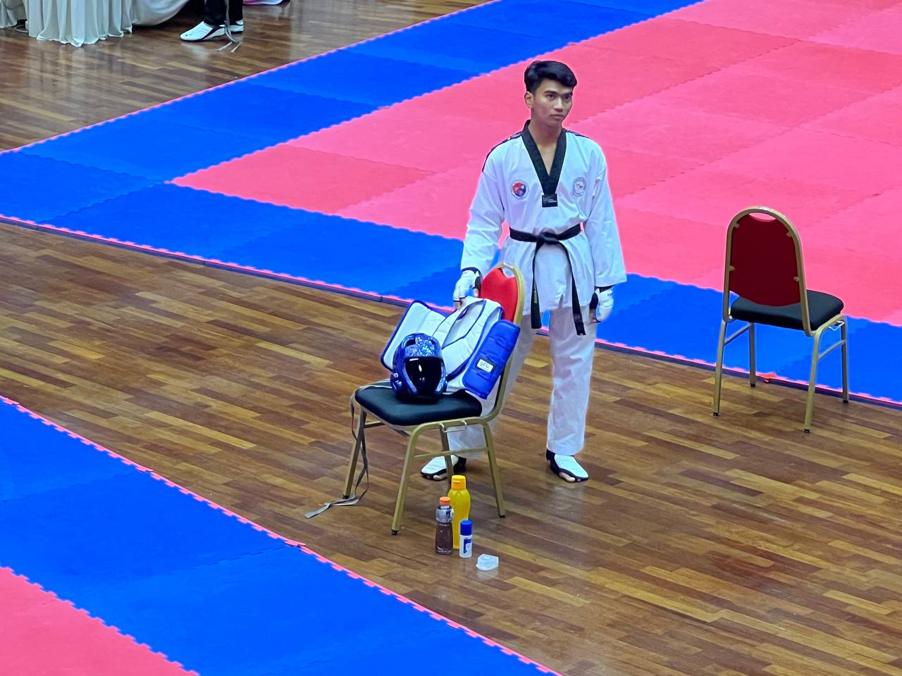

Taekwondo holds a significant presence in Malaysia as one of the most popular martial arts and sports. It was introduced to the country in the 1960s and has since grown into a widely practiced discipline, embraced by people of all ages. Governed by organizations such as the Taekwondo Malaysia (TM), which is recognized by the World Taekwondo (WT), the sport has a structured framework for training, competitions, and development. Malaysian Taekwondo athletes have consistently achieved success at regional and international levels, including the Asian (SEA) Games, Asian Games, and World Taekwondo Championships. The sport is actively promoted in schools, universities, and community centers, contributing to its widespread adoption as both a competitive sport and a method of personal development.
I have been involved in Taekwondo since I was seven years old in 2011 and continue to practice the sport to this day. Throughout my journey in Taekwondo, I have experienced both challenges and triumphs that have shaped my growth. I have participated in numerous competitions, primarily in sparring events, competing at various levels, including international, national, state, and school tournaments. Most recently, I proudly represented UiTM Cawangan Negeri Sembilan at the Super UiTM competition held at UiTM Shah Alam. Despite setbacks like a finger fracture during a competition, Taekwondo has taught me valuable life skills, including time management, punctuality, discipline, and self-defense.
| Year | Name Of The Tournaments |
|---|---|
| 2024 | Super UiTM |
| 2023 | Mini Karisma |
| National Championships | |
| Interclub Championships | |
| 2019 | National Taekwondo Championships |
| Interclub Taekwondo Championships | |
| Remaja Championships |